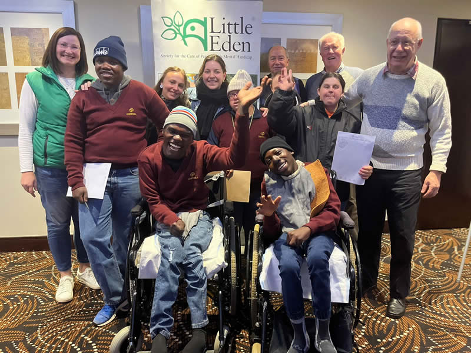

Our Care and Services

LITTLE EDEN provides a range of services designed to support the physical, emotional and developmental needs of residents.
Residential Care
Residents receive lifelong residential care in a safe, supportive and caring environment.
Therapy and Stimulation
Residents participate in activities and programmes designed to encourage development, participation and quality of life.
Healthcare
Healthcare and daily support form an important part of providing holistic care to residents.
Community Support
Volunteers, donors, sponsors and community members play an important role in supporting LITTLE EDEN's work.